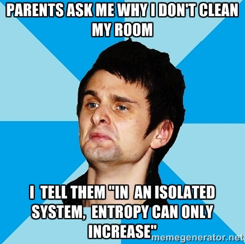
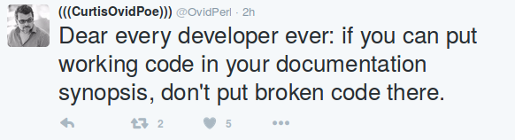

Make Yourself Indispensable
http://meis.github.io/talks/Make-Yourself-Indispensable
RULES
1
The journey begins
Performance
doesn't really matter
3 Key Goals
Maximize Entropy

Keep Secrets
Increase Fear...
...in others
Project an image
2
Fearsome Secret Keeper of Chaos?
NO
Best practices FTW
Write a LOT of code
Duplicate
Duplycate
Everything is Exceptional
(Advanced technique)
BIG Commits
Document
3
Overdocument

# TODO
Automate nothing
Tests
Communication
4
Try Slack!
Tests
Infoxication
Memes & Cat Pictures
More Popular than Jesus
Be Creative!
You won't be seen like
You'll be seen like
Thank You!
Share your thoughts